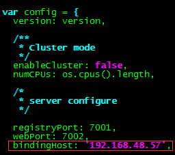

一、部署cnpm
1、获取代码
1 | git clone git://github.com/fengmk2/cnpmjs.org.git |
2、创建mysql库
Default
1 | create database cnpmjs; |
3、安装依赖
安装依赖其实就是一个 npm install，不过 CNPM 把该指令已经写到 Makefile 里面了，所以直接执行下面的命令就好了。1
2 cd cnpmjs.org
npm install
当然万一你是 Windows 用户或者不会 make，那么还是要用 npm install。1
$ npm install --build-from-source --registry=https://registry.npm.taobao.org --disturl=https://npm.taobao.org/mirrors/node
4、修改配置文件
修改配置
1 | vim /cnpmjs.org/config/index.js |

cnpm提供两个端口：7001和7002，其中7001用于NPM的注册服务，7002用于Web访问。
bindingHost为安装cnpm的服务器ip地址，也就是在浏览器中只能通过访问http://192.168.48.57来访问cnpm以及获取npm的注册服务。

按照之前创建的数据库来进行配置
这里将会列举一些常用的配置项，其余的一些配置项请自行参考 config/index.js 文件。
配置字段参考
https://segmentfault.com/a/1190000005946580
1 | enableCluster：是否启用 cluster-worker 模式启动服务，默认 false，生产环节推荐为 true; |
下面是index.js配置实例：
1 | ; |
5、启动服务
搞好配置之后就可以直接启动服务了。1
$ node dispatch.js
官方脚本启动
官方的其它一些指令，比如你可以用 NPM 的 script 来运行。
1 | npm run start |
在 CNPM 里面，npm script 还有下面几种指令
1 | npm run dev：调试模式启动； |
6、访问cnpm
二、问题总结
问题1：安装cnmp依赖问题
npm 默认使用官方源（国外），速度慢,已报错；可以安装cnpm，使用cnpm install安装（淘宝源）
Default
1 | //安装cnpm |
问题2：设置同步后报错
设置同步后，syncModel设置为exist或all,通过仓库下载模块报如下错误
1 | 0] [error] [connect] sync error: TypeError: Cannot read property ‘findAll’ of null |
解决办法：
在index.js文件内设置enableAbbreviatedMetadata: true，问题解决。